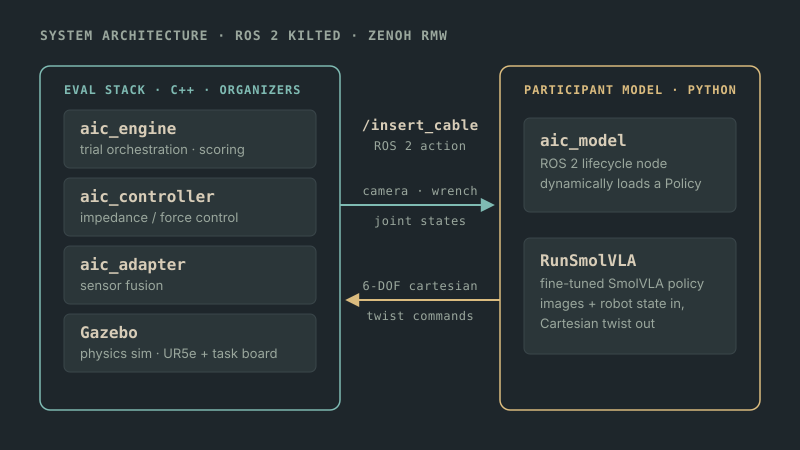
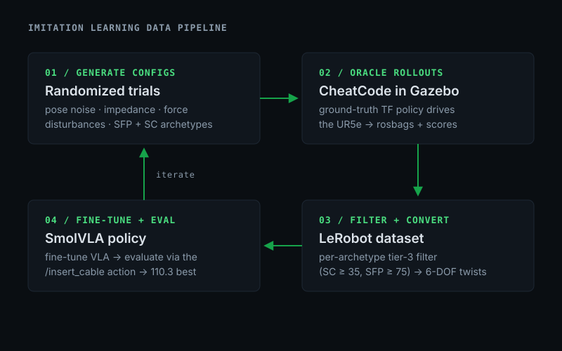
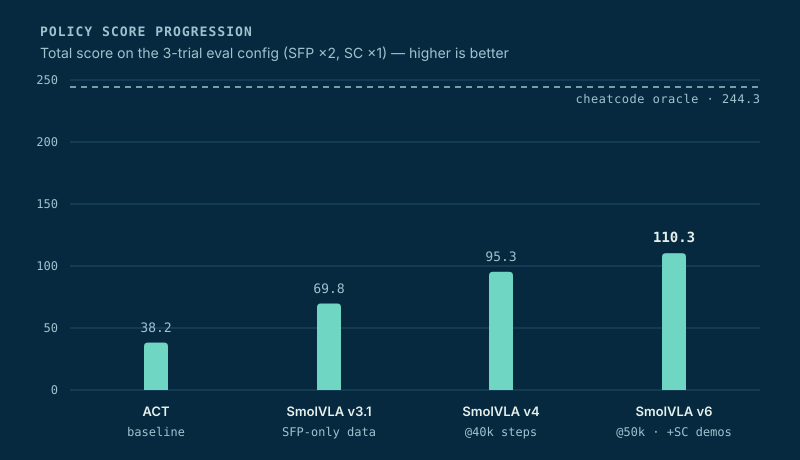

Project · Imitation Learning · Robot Manipulation
AIC Connector Insertion Private repo — code cannot be shared
Team entry to Intrinsic's AI for Industry Challenge: teaching a simulated UR5e to plug fiber-optic connectors into a networking task board with a fine-tuned vision-language-action model. Built with Abhijit Makhal and Amrit Saini. The repo is private, so this page documents the system, the experiments, and the results.
Overview
The challenge is dexterous cable insertion: a UR5e arm in Gazebo must pick up SFP and SC fiber-optic connectors and seat them in ports on a task board — a peg-in-hole problem that demands sub-centimeter precision under randomized start poses, impedance settings, and force disturbances. The organizers run a fixed C++ evaluation stack; participants submit a single Python policy that answers one ROS 2 action. Scoring rewards proximity, smoothness, and above all insertion depth, and punishes collisions.
We went with a learned approach: collect demonstrations from a ground-truth oracle policy, convert them into a LeRobot dataset, and fine-tune SmolVLA — a small vision-language-action model — to imitate them. Over a documented experiment campaign the policy went from the provided ACT baseline's 38.2 to 110.3, close to a 3× improvement.
System

Everything meets at one boundary. The evaluation side owns the physics: an engine that
orchestrates and scores trials, an impedance controller, and a sensor-fusion adapter around
a Gazebo simulation of the arm and task board. Our side is a ROS 2 lifecycle node that
dynamically loads a Policy and answers the /insert_cable action
— consuming camera images, wrench readings, and joint states, and streaming back
6-DOF Cartesian twist commands. The stack runs on ROS 2 Kilted over the Zenoh RMW, with the
submission executing inside a resource-limited container (a 30-second model-discovery budget
included — heavy imports can silently kill a run).
Data & Training Pipeline

Demonstrations come from CheatCode, an oracle policy that reads ground-truth transforms the real submission never sees. Stage one generates randomized trial configs — start-pose jitter, impedance randomization, injected force disturbances, scene clutter — so the dataset covers the perturbations evaluation will throw at us. Stage two rolls the oracle through Gazebo, recording rosbags and scores. Stage three filters for successful episodes and converts them into a LeRobot dataset, finite-differencing the oracle's pose commands into the same 6-DOF twist action space the policy will emit. Stage four fine-tunes SmolVLA and sends it back through evaluation. Then iterate.
“Randomized” carries a lot of weight in that description, so here is the full inventory. Each form of variation is an independent, seeded block in the config generator, switchable per collection run:
- Board & rail placement — task-board pose shifted ±1–2 cm; the target rail slid and yawed ±0.03–0.12 rad along its channel.
- Scene clutter — each of the board's 13 rail slots probabilistically populated with distractor cards, ports, and fixtures, so the target is never the only object in view.
- Grasp jitter — the plug's pose in the gripper perturbed ±2 mm / ±0.04 rad, matching the documented evaluation envelope.
- Start pose — per-joint Gaussian offsets on the arm's home configuration (±5° σ, clipped at ±10°).
- Correlated action noise — DART-style temporally correlated noise on the oracle's commands during the approach phase (2 mm / 0.005 rad σ, τ = 0.5 s), disabled near contact so demonstrations stay clean where precision matters. The expert's recoveries become training data.
- Force disturbances — one to three random ~5 N shoves applied to the wrist mid-approach through the physics engine.
- Impedance randomization — controller stiffness scaled ×[0.7–1.3] and damping ×[0.8–1.2] per trial, so recovery behavior is learned under a range of contact dynamics.
- Language — every episode carries a minimal task-only prompt matched to its scene, never a verbose scene description: scene-rich prompts measurably hurt precision, and the evaluator prompts minimally anyway.
Key Insight
The SC connector trial scored near zero for every policy, and the reason turned out to be the simulator itself: the SC plug's keying tabs collide with 3 mm-wide interior port geometry, so full insertion is physically impossible — even the ground-truth oracle caps out around 40 points. A single “full insertion” filter threshold was therefore discarding 100% of SC demonstrations. Switching to a per-archetype threshold (SC ≥ 35, SFP ≥ 75) let partial-insertion SC demos into the dataset — partial demos teach the policy to engage instead of hover — and lifted the SC trial by 56% without hurting SFP.
Engineering Workflow
Fourteen dataset→train→eval loops in eleven days came from a deliberate working method: pair-engineering with an AI coding agent (Claude Code). The agent operated the experimental apparatus — simulator bring-up, batch collection runs, training launches, checkpoint evaluations — and monitored the logs in real time. I set the hypotheses, reviewed the same evidence (scoring files, force traces, evaluation videos), and made the calls. Not code generation on faith: run it, watch it, measure it, write it down.
The standing rule that made the pairing work: any procedure worth doing twice was promoted into a deterministic, seeded, one-command tool — config generation, the evaluation harness, checkpoint scans, the recording rig behind the videos on this page. Determinism is also what let the agent iterate at a cadence humans don't sustain. Starting, interrogating, and tearing down the simulator dozens of times an hour surfaced the startup races and stale-state quirks that slow manual cycles hide — zombie transport nodes surviving between runs, silently cached policy files, a randomization block that turned out to be a silent no-op — and each diagnosis landed back in the tooling as a permanent guard.
Collection and training batches were resumable and ran unattended overnight, with the agent analyzing results as they arrived. Mornings began with a completed analysis and a decision about the next experiment, not a pile of raw logs — the rhythm that made roughly one full experimental loop per day sustainable on a single consumer GPU.
Results

The final dataset was 203 episodes (53,611 frames): SFP demonstrations, a slice targeting the hardest port, and 20 partial-insertion SC demos admitted by the per-archetype filter. Every model was scanned across training checkpoints before judging — the best run peaked at 50k steps and measurably overtrained by 60k. The negative results were kept on the books too: default image augmentation regressed every checkpoint (too aggressive for a sub-centimeter task), and three attempts at hand-coded descent overrides all scored worse than the pure learned policy — the remaining gap is lateral precision, not descent timing. Along the way: compressed-camera republishing cut per-trial bags from 7.4 GB to 0.75 GB, and a host/container launch fix took SC data collection from zero usable episodes to 18 in one sweep.
Team
- Tyler Johnson
- Lead — trial randomization framework, C++ engine fixes, evaluation orchestration, and the fine-tuning experiment campaign from baseline to the 110.3 best
- Abhijit Makhal
- The four-stage data-collection pipeline (config generation, rollout orchestration, LeRobot conversion) and the host↔container integration debugging
- Amrit Saini
- SmolVLA and Pi0 inference policies and the model training workflow the fine-tuning campaign was built on